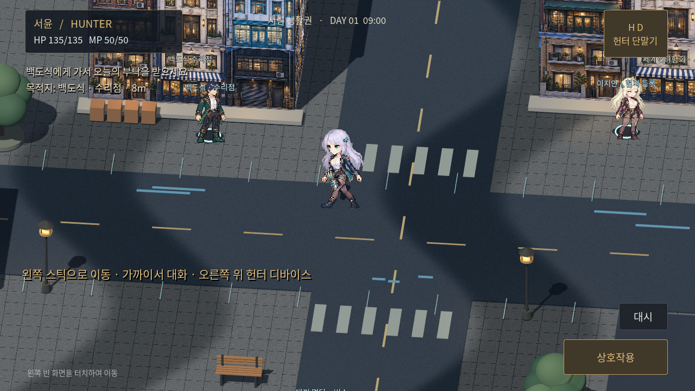

2.5D PIXEL RPG
BE MY
HUNTER
돌아갈 곳을 지키는 사람.
나만의 헌터를 만들고, 서림의 거리를 직접 걸으세요.
전투와 구조, 남겨진 사람들의 이야기가 이어집니다.
첫 서림 생활권가로 화면
Xogot: ZIP 압축 해제 → project.godot 가져오기 → ▶ 실행
웹 실행에는 WebGL 2를 지원하는 브라우저가 필요합니다.
새로하기 · 커스터마이징 · 포인트 특성
직접 이동 · 합/코인 전투 · 정신력/흐트러짐 · 디바이스
